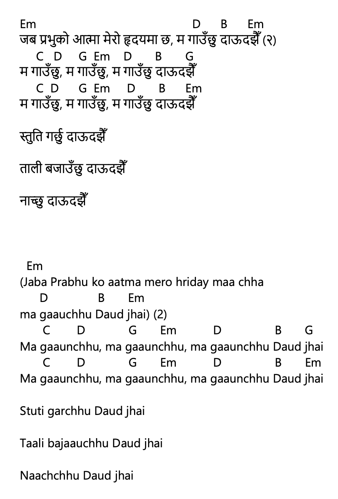

जब प्रभुको आत्मा मेरो हृदयमा छ – Jaba Prabhuko Aatma Mero Hridayama Chha

नेपाली Lyrics (Copyable)
जब प्रभुको आत्मा मेरो हृदयमा छ, म गाउँछु दाऊदझैँ (२)
म गाउँछु, म गाउँछु, म गाउँछु दाऊदझैँ
म गाउँछु, म गाउँछु, म गाउँछु दाऊदझैँ
स्तुति गर्छु दाऊदझैँ
ताली बजाउँछु दाऊदझैँ
नाच्छु दाऊदझैँ